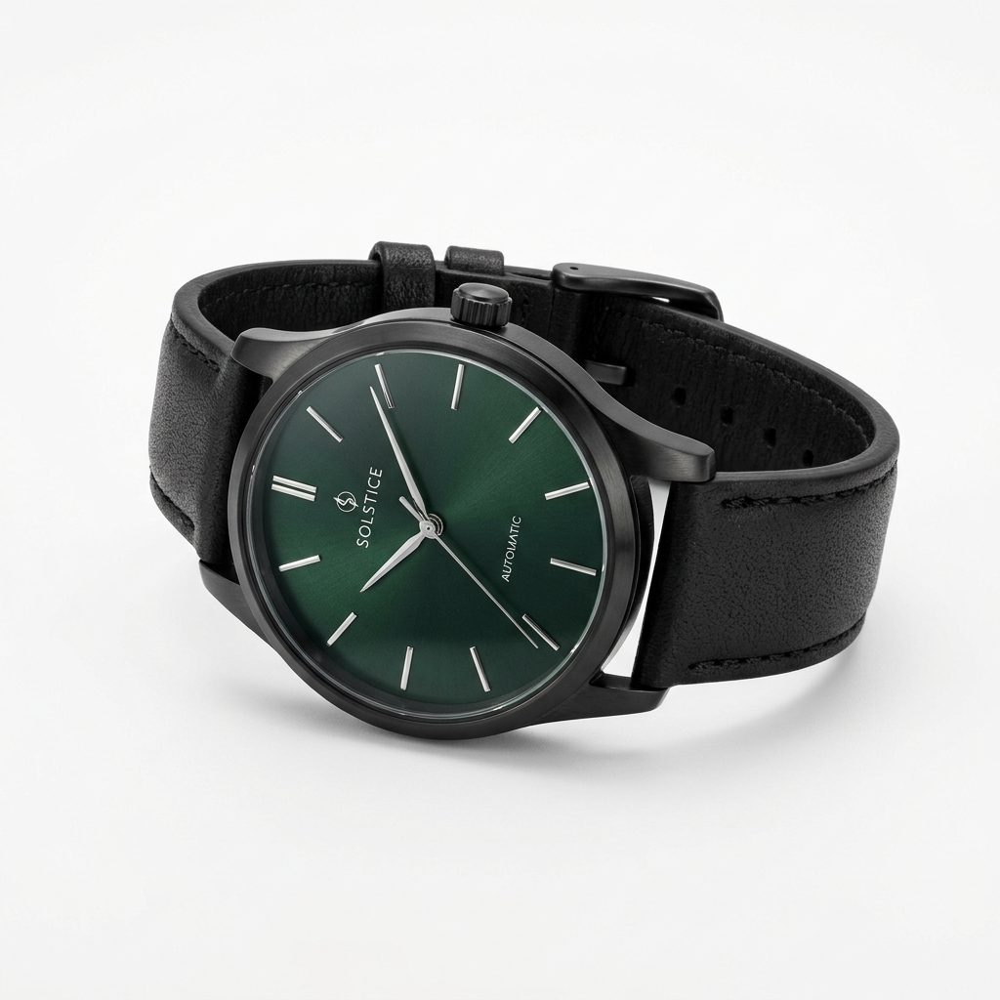

AKSESORIS & WATCH
Jam Tangan Urban Chrono
Rp225.000
Jam tangan kasual pria & wanita dengan dial warna hijau zamrud (forest emerald) yang memikat dan bodi baja matte black anti-karat. Dilengkapi tali kulit sintetis lembut bermotif elegan yang nyaman melingkar di pergelangan tangan seharian penuh.
Keunggulan Produk:
- Mesin Quartz presisi
- Kaca mineral tahan gores
- Water-resistant 3 ATM
Pilihan Varian Dial & Strap:
Pertanyaan Seputar Jam Tangan Urban Chrono
Jawaban akurat seputar ketahanan air, baterai, dan garansi jam tangan.
Apakah jam tangan ini aman terkena air saat cuci tangan atau wudhu?
Ya, fitur water-resistant 3 ATM melindungi jam tangan dari percikan air, cuci tangan, wudhu, dan hujan ringan. Namun, tidak disarankan digunakan saat berenang, menyelam, atau mandi dengan air hangat.
Berapa lama daya tahan baterai bawaan jam?
Mesin Quartz kami dilengkapi baterai original Japan standard yang memiliki estimasi masa pakai aktif selama 2 hingga 3 tahun tanpa perlu diganti.
Apakah kaca jam tangan mudah tergores?
Kaca jam dilapisi mineral sapphire-coated crystal yang memberikan perlindungan ekstra terhadap goresan kunci, koin, atau gesekan meja saat Anda beraktivitas harian.
Ulasan Pelanggan
Dengarkan pengalaman langsung dari para pembeli terverifikasi Jam Tangan Urban Chrono.
Kevin Sanjaya Pembeli Terverifikasi
Dial warna hijau zamrudnya kalau kena pantulan cahaya elegan banget! Bodi matte black-nya kokoh dan tali kulitnya lemas nggak kaku pas pertama kali dipakai. Dipakai cuci tangan dan wudhu berkali-kali aman nggak ngembun.
Satria Pratama Pembeli Terverifikasi
Dengan harga segini kualitasnya di atas ekspektasi. Detik jarumnya presisi nggak ada goyang, kacanya jernih banget. Temen-temen kantor pada nanya beli di mana karena look-nya kayak jam jutaan.
Nadia Utami Pembeli Terverifikasi
Bagus dan uniseks, tangan saya yang agak kecil masih cocok pakai jam ini karena lingkar bezelnya nggak terlalu lebar. Box eksklusifnya juga cakep buat kado ulang tahun.
Tulis Ulasan Produk Anda
Bantu pembeli lain dengan membagikan ulasan jujur pengalaman Anda memakai jam tangan ini.